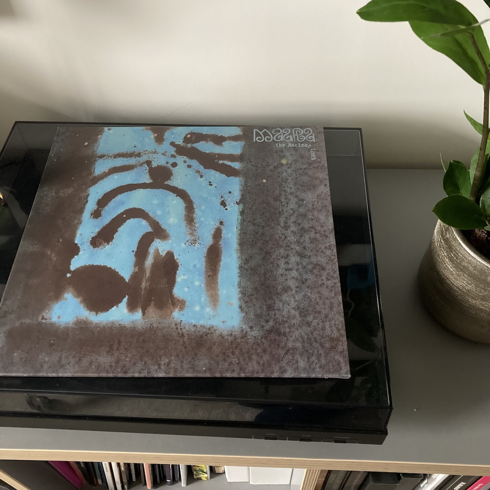

Posted on 2024-01-10 · 1 min read · Maara · Twenty Four · Electronic · Album Digest · Vinyl
When I wrote about Maara’s “The Ancient Truth” over Christmas as part of my albums of the year rundown, I mentioned at the end that I would love to find a copy on vinyl to listen to. Well dear reader I managed to! It arrived today from the Netherlands with minimal fuss. It sounds great and I’m not sure whether my review did it justice: that’s the problem with attempting to (re-)review ten albums in ten days with Christmas and New Year all happening at the same time!
Photographic evidence:

See Also
- 2023 Albums of the Year #7: Maara, The Ancient Truth
- 2023 Albums: Honourable Mentions
- 2023 Albums of the Year #1: Sofia Kourtesis, Madres
- 2023 Albums of the Year #2: James Holden, Imagine This is a High Dimensional Space of All Possibilities
- 2023 Albums of the Year #3: Barry Can't Swim, When Will We Land?